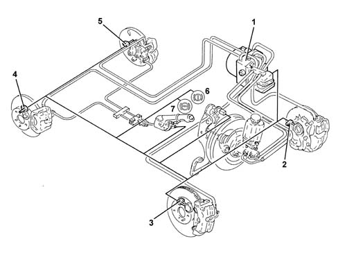
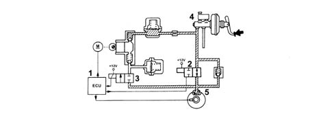
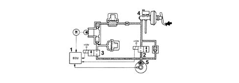
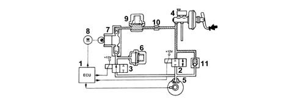
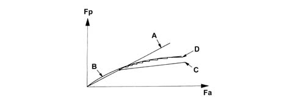

Introduction - A(B.S. ANTI-LOCK BRAKING SYSTEM .)
- Path
- Descriptions > 33 BRAKING SYSTEM > 3340 A(B.S. ANTI-LOCK BRAKING SYSTEM .) > Introduction - A(B.S. ANTI-LOCK BRAKING SYSTEM .)
- Kind
- system description
- Applies to
- engines: 1.6 TS, 2.0 TS; all production periods
- Interactive page
- https://sloeber94.github.io/elrnDB-a147/en/#/3026101
Applies to: engines: 1.6 TS, 2.0 TS; all production periods
CONSTRUCTION FEATURES
147 versions come with an ABS/EBD brake control system.
The ABS/EBD system is Bosch 5.7, developed from the 5.3 system formerly fitted other Alfa Romeo cars.
The ABS is fitted in parallel to the hydraulic brake system so that braking is still assured even if the ABS is faulty.
Because the ABS incorporates EBD (Electronic Brakeforce Distribution), a rear load proportioning valve is not fitted).
VIEW OF ASSEMBLY

1 - ABS/EBD control unit 2 - Front wheel sensor left 3 - Front wheel sensor right 4 - Rear wheel sensor right 5 - Rear wheel sensor left 6 - EBD warning light 7 - ABS warning light
SPECIFICATIONS:
The Bosch 5.7 Bosch is a development of the tried and tested 5.3 ABS. It is connected to the C-CAN network, where it is referred to as NFR (i.e. Italian acronym for Braking Node). It comes in three versions:
- ABS 5.7 with EBD
- ABS 5.3 with EBD and ASR/MSR (drive control) []
- ABS 5.7 with EBD and VDC (dynamic vehicle control) [].
The ABS control unit is connected to the front wiring. The system wiring harness is part of the engine bay wiring harness.
The control unit receives and transmits information via the C-CAN network and supports the following functions:
- direct download of a speed signal from all four wheels, signal processing and signal transmission via the C-CAN network
- direct downlaod of a drive wheel speed signal, signal processing and signal transmission via the C-CAN network
- transmission of a vehicle speed output (VSO) to the Body Computer along a discrete line (used if the C-CAN network is faulty).
- direct download of a signal from the vehicle brake light control, Normally Open in the case of ABS, ASR and Normally Closed in the case of VDC.
- management of ABS, ASR, EBD and VDC warning lights via a C-CAN line and download of warning light status feedback from NQS
- Automatic diagnosis on a direct line (K line)
COMPOSITION
Structure
The A.B.S. 5.7 system consists of:
- an electronic control unit built into the hydraulic control unit
- an electro-hydraulic control unit which modulates the braking pressure via eight solenoid valves, two for each wheel
- four ACTIVE MAGNETORESISTIVE sensors which detect the angular rotation speed of the wheels.
- wiring with specific connector
OPERATTION
Introduction
The electronic control unit processes signals from active sensor and the brake light control switch. The control unit then implements strategies to detect the wheel or wheels that are tending to lock (maximum slip between wheel and road surface). The unit then modulates brake fluid pressure selectively for the front wheels and in tandem for the rear wheels (select-low function).
The ABS system modulates braking pressure in three basic stages:
- 1st pressure maintenance stage
- 2nd pressure reduction stage
- 3rd pressure increase stage
When the ABS is required to intervene, it remains active until the speed drops to 2.7 km/h but then cuts out to allow the car to stop. After each Key ON and when the car is moving faster than 6 km/h, the control unit tests solenoid and brake pump operation. The control unit also tests the sensors when the car is moving faster than 12 km/h.
The body computer identifies the ABS as a component of the C-CAN network at the first Key ON
Operating strategy
Pressure increase stage without abs intervention
With the brake pedal pressure, the electronic control unit (1):
- does not supply the pressurizing solenoid valve (N.A.) (2)
- does not supply the discharge solenoid valve (N.C.) (3).
Therefore, the pressure produced by the brake pump (4) reaches the brake calipers (5) without undergoing variations.

Situation with abs intervention
Pressure maintenance stage
The electronic control unit (1):
- supplies the pressurizing solenoid valve (N.A.) (2)
- does not supply the discharge solenoid valve (N.C.).
Therefore, the hydraulic connection between the brake pump (4) and the brake caliper (5) is interrupted.
The pressure in the brake caliper (5) remains constant even if the pressure on the brake pedal increases.

Pressure reduction stage
The electronic control unit:
- supplies the pressurizing solenoid valve (N.A.) (2)
- supplies the discharge solenoid valve (N.C.) (3).
The hydraulic connection between the brake pump (4) and the brake caliper (5) is interrupted and the pressurizing solenoid valve (3) opens and places the brake caliper (5) in contact with the low pressure accumulator (6) and the recovery pump (7).
The electronic control unit (1) also supplies the drive motor (8) of recovery pump (7) to reintroduce the fluid removed from the brake caliper (5) back into the main circuit.
The fluid passes through the high pressure accumulator (9) and the restricter (10) which have a damping effect.
The system is equipped with a single-acting valve (11) fitted in parallel to the pressurizing valve (2) which allows a rapid reduction in the pressure at the brake caliper (5) when the brake pedal is released.

Pressure increase stage
The electronic control unit (1):
- does not supply the pressurizing solenoid valve (N.A.) (2)
- does not supply the discharge solenoid valve (N.C.) (3).
The fluid that was re-introduced into the main circuit is then free to return to brake calipers (5) and increase pressure acting on the brake calipers.
Ebd function (electronic brake force distribution)
The EBD function controls the distribution of the brake force and therefore replaces the conventional mechanical load proportioning valve making it possible to:
- act only on the rear brake calipers
- improve the brake force distribution
- intervene in an optimum manner in all load conditions (static or dynamic), driving conditions (in a straight line or round bends) and condition of the vehicle (tyres, brakes and suspension worn)
- implement a strategy which follows the ideal distribution curve.

Fa - front axle brake force Fp- rear axle brake force A - Distribution curve implemented by the braking system B - Ideal distribution curve C - Distribution curve implemented by the conventional hydraulic load proportioning valve D - Distribution curve implemented by the EDB function
A failure in the EBD function is signalled by the following warning lights coming on simultaneously:
- ABS warning light
- insufficient brake fluid and/or handbrake applied warning light
It is therefore necessary to drive the vehicle extremely carefully to the nearest authorized workshop to have the system checked.
Recovery
The electronic control unit is equipped with a safety circuit which has the task of safeguarding the efficiency of the A.B.S. system.
With the ignition key inserted, the safety circuit checks the following for 4 seconds:
- the operation of the electronic control unit
- it activates the solenoid valves to check their operation
- checks the C-CAN network
Each time the vehicle sets off from a stationary position, the safety circuit checks the presence of the active sensor signals.
With the vehicle driving, the safety circuit behaves in the following way:
- it continuously compares the angular speed of the wheels with the reference speed calculated
- it checks the memory conditions
- it checks the operation of the two relays, the solenoid valves and the pump motor
- it constantly checks the battery voltage
- it checks the efficiency of the brake pedal switch.
- it checks the efficiency of the C-CAN network.
If the safety circuit has detected one or more irregularities with the system components during the checking stage it behaves in the following way:
- it switches off the A.B.S. system while still ensuring the efficiency of the conventional braking system.
- it turns on the panel warning light to notify the driver of a fault.